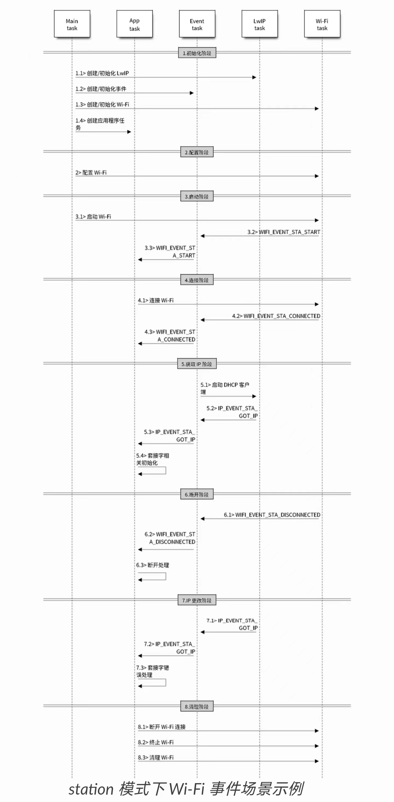

Station 模式#
实验目的#
Station(基站)模式，又称 STA 模式或 Client 模式。
本实验目的是将 ESP32 设备连接到附近的 AP 接入点。
内容详解#
设置 WiFi 接入点参数#
WiFi 连接接入点 AP 的主要参数有：接入点 SSID，接入点密码，以及最大连接次数, 如下图，宏定义在station_example_main.c中，可直接在在文件中修改，也可使用 idf.py menuconfig中修改
#define EXAMPLE_ESP_WIFI_SSID CONFIG_ESP_WIFI_SSID //WiFi接入点名
#define EXAMPLE_ESP_WIFI_PASS CONFIG_ESP_WIFI_PASSWORD //WiFi接入点密码
#define EXAMPLE_ESP_MAXIMUM_RETRY CONFIG_ESP_MAXIMUM_RETRY //最大重连次数
wifi_config_t wifi_config = {
.sta = {
.ssid = EXAMPLE_ESP_WIFI_SSID,
.password = EXAMPLE_ESP_WIFI_PASS,
/* Setting a password implies station will connect to all security modes including WEP/WPA.
* 设置密码意味着工作站将连接到所有安全模式，包括 WEP/WPA。
* However these modes are deprecated and not advisable to be used. Incase your Access point
* doesn't support WPA2, these mode can be enabled by commenting below line
* 但是，这些模式已被弃用，不建议使用。以防万一您的接入点不支持 WPA2，这些模式可以通过下面的注释来启用*/
.threshold.authmode = WIFI_AUTH_WPA2_PSK,
},
其中主要用到了 wifi_sta_config_t 这个结构体，它的内容如下所示
typedef struct {
uint8_t ssid[32];//SSID
uint8_t password[64];//密码
bool bssid_set;//是否设置目标AP的MAC地址，一般设为0；只有用户需要查看AP的MAC地址时才设为1
uint8_t bssid[6];//目标AP的MAC地址
uint8_t channel;//目标AP的通道，如果未知设为0；范围是1-13
} wifi_sta_config_t;
API#
WIFI 的 API 定义在esp_wifi.h头文件中，希望深入了解的同学可以自行前往该头文件进行阅读并理解 WiFi 深层次的知识。
WiFi 驱动可以看成是黑盒，它对高层代码一无所知，比如 TCPIP 栈、应用程序任务、事件任务等，它所能做的就是接收来自高层的 API 调用或将事件队列发布到指定的队列，由 API
esp_wifi_init()初始化。事件任务是一个守护任务，它接收来自 WiFi 驱动程序或其他子系统的事件，例如作为 TCPIP 栈，事件任务在接收到事件时会调用默认的回调函数。例如在接收到事件
SYSTEM_EVENT_STA_CONNECTED时，它会调用tcpip_adapter_start()来启动 DHCP 客户端在它的默认处理程序中。应用可以通过 API
esp_event_init注册自己的事件回调函数，然后应用回调函数将在默认回调之后调用。此外，如果应用程序不想执行回调，在事件任务中，它需要做的是在应用回调函数中将相关事件发布到应用任务。应用程序任务（代码）通常将所有这些东西混合在一起，它调用 API 来初始化系统/WiFi 和必要时处理事件。
下图为 station 模式下的宏观场景，其中包含不同阶段的具体描述：

Wi-Fi station 模式示例#
此示例说明如何使用 ESP 的 Wi-Fi 驱动程序将 Wi-Fi Station 连接到接入点。
请同学们使用手机开热点并设置密码，将热点名称和密码输入到 ESP32 初始化。或使用实验室 WiFi 热点：
SSID: iot
PASS: iot@Gdpu3721
配置 WiFi 接入点参数#
打开项目配置功能：idf.py menuconfig
在Example Configuration菜单中：
设置 WiFi SSID。
设置 WiFi Password。
设置 Maxmum Retry
可选：如果需要，请根据您的要求更改其他选项。
构建和烧录#
构建项目并将其烧写到板上，然后运行监控工具查看串行输出，两种方法：
在终端中进入命令行界面：
idf.py -p PORT flash monitor （要退出串行监视器，请键入 Ctrl-]。）
在 Clion 进入视窗界面：
选择 flash 并运行
选择 monitor 并运行
示例输出#
请注意，输出，特别是输出的顺序，可能会因环境而异。
如果站连接到 AP 成功，控制台输出：
I (589) wifi station: ESP_WIFI_MODE_STA
I (599) wifi: wifi driver task: 3ffc08b4, prio:23, stack:3584, core=0
I (599) system_api: Base MAC address is not set, read default base MAC address from BLK0 of EFUSE
I (599) system_api: Base MAC address is not set, read default base MAC address from BLK0 of EFUSE
I (629) wifi: wifi firmware version: 2d94f02
I (629) wifi: config NVS flash: enabled
I (629) wifi: config nano formating: disabled
I (629) wifi: Init dynamic tx buffer num: 32
I (629) wifi: Init data frame dynamic rx buffer num: 32
I (639) wifi: Init management frame dynamic rx buffer num: 32
I (639) wifi: Init management short buffer num: 32
I (649) wifi: Init static rx buffer size: 1600
I (649) wifi: Init static rx buffer num: 10
I (659) wifi: Init dynamic rx buffer num: 32
I (759) phy: phy_version: 4180, cb3948e, Sep 12 2019, 16:39:13, 0, 0
I (769) wifi: mode : sta (30:ae:a4:d9:bc:c4)
I (769) wifi station: wifi_init_sta finished.
I (889) wifi: new:<6,0>, old:<1,0>, ap:<255,255>, sta:<6,0>, prof:1
I (889) wifi: state: init -> auth (b0)
I (899) wifi: state: auth -> assoc (0)
I (909) wifi: state: assoc -> run (10)
I (939) wifi: connected with #!/bin/test, aid = 1, channel 6, BW20, bssid = ac:9e:17:7e:31:40
I (939) wifi: security type: 3, phy: bgn, rssi: -68
I (949) wifi: pm start, type: 1
I (1029) wifi: AP's beacon interval = 102400 us, DTIM period = 3
I (2089) esp_netif_handlers: sta ip: 192.168.77.89, mask: 255.255.255.0, gw: 192.168.77.1
I (2089) wifi station: got ip:192.168.77.89
I (2089) wifi station: connected to ap SSID:myssid password:mypassword
站点连接 AP 失败时的控制台输出：
I (589) wifi station: ESP_WIFI_MODE_STA
I (599) wifi: wifi driver task: 3ffc08b4, prio:23, stack:3584, core=0
I (599) system_api: Base MAC address is not set, read default base MAC address from BLK0 of EFUSE
I (599) system_api: Base MAC address is not set, read default base MAC address from BLK0 of EFUSE
I (629) wifi: wifi firmware version: 2d94f02
I (629) wifi: config NVS flash: enabled
I (629) wifi: config nano formating: disabled
I (629) wifi: Init dynamic tx buffer num: 32
I (629) wifi: Init data frame dynamic rx buffer num: 32
I (639) wifi: Init management frame dynamic rx buffer num: 32
I (639) wifi: Init management short buffer num: 32
I (649) wifi: Init static rx buffer size: 1600
I (649) wifi: Init static rx buffer num: 10
I (659) wifi: Init dynamic rx buffer num: 32
I (759) phy: phy_version: 4180, cb3948e, Sep 12 2019, 16:39:13, 0, 0
I (759) wifi: mode : sta (30:ae:a4:d9:bc:c4)
I (769) wifi station: wifi_init_sta finished.
I (889) wifi: new:<6,0>, old:<1,0>, ap:<255,255>, sta:<6,0>, prof:1
I (889) wifi: state: init -> auth (b0)
I (1889) wifi: state: auth -> init (200)
I (1889) wifi: new:<6,0>, old:<6,0>, ap:<255,255>, sta:<6,0>, prof:1
I (1889) wifi station: retry to connect to the AP
I (1899) wifi station: connect to the AP fail
I (3949) wifi station: retry to connect to the AP
I (3949) wifi station: connect to the AP fail
I (4069) wifi: new:<6,0>, old:<6,0>, ap:<255,255>, sta:<6,0>, prof:1
I (4069) wifi: state: init -> auth (b0)
I (5069) wifi: state: auth -> init (200)
I (5069) wifi: new:<6,0>, old:<6,0>, ap:<255,255>, sta:<6,0>, prof:1
I (5069) wifi station: retry to connect to the AP
I (5069) wifi station: connect to the AP fail
I (7129) wifi station: retry to connect to the AP
I (7129) wifi station: connect to the AP fail
I (7249) wifi: new:<6,0>, old:<6,0>, ap:<255,255>, sta:<6,0>, prof:1
I (7249) wifi: state: init -> auth (b0)
I (8249) wifi: state: auth -> init (200)
I (8249) wifi: new:<6,0>, old:<6,0>, ap:<255,255>, sta:<6,0>, prof:1
I (8249) wifi station: retry to connect to the AP
I (8249) wifi station: connect to the AP fail
I (10299) wifi station: connect to the AP fail
I (10299) wifi station: Failed to connect to SSID:myssid, password:mypassword
源代码参考#
参见参考资料与源代码